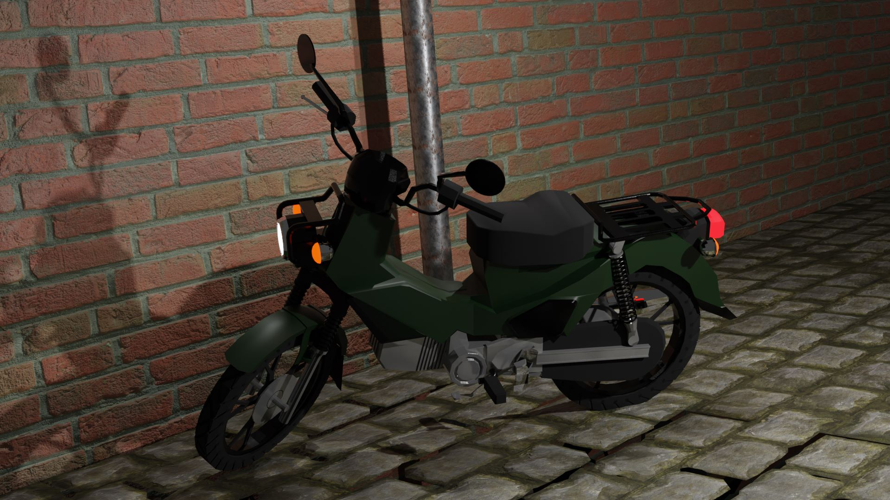
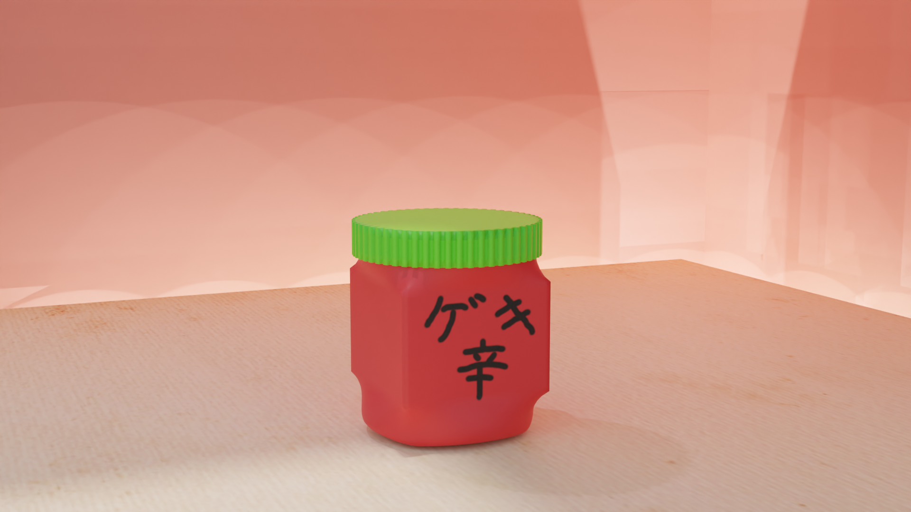
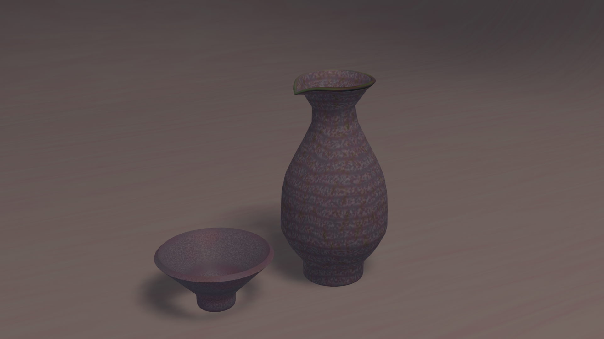
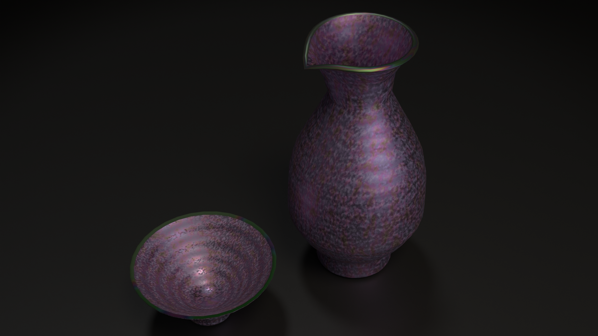
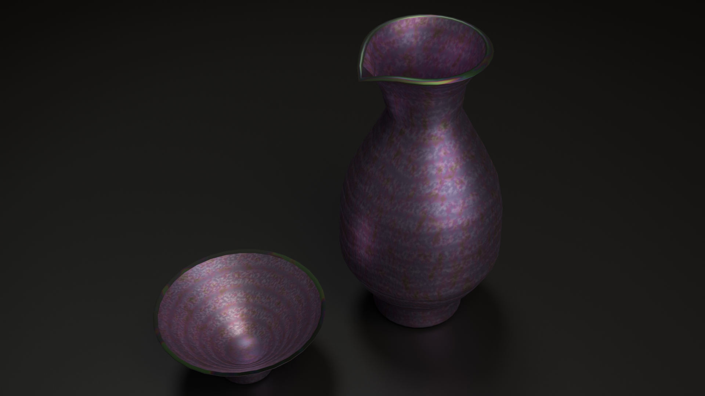
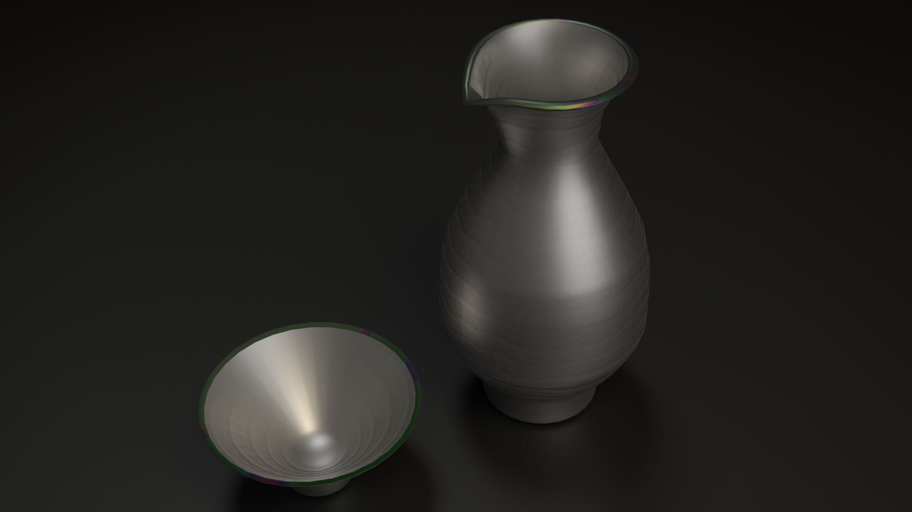
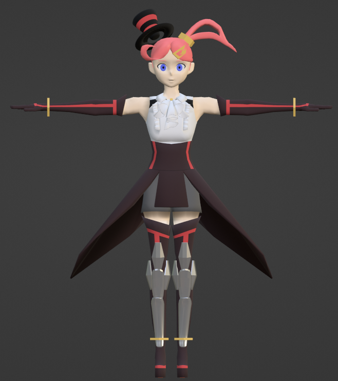
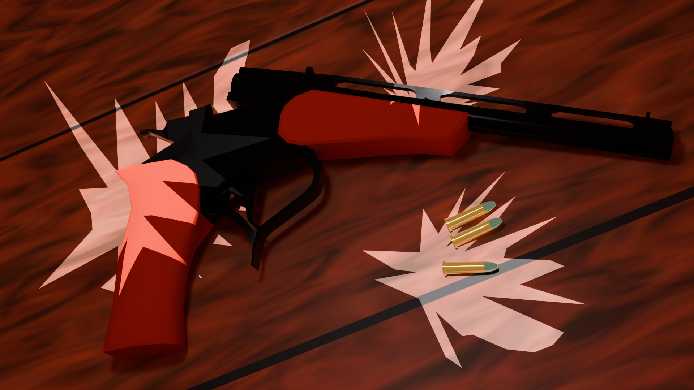
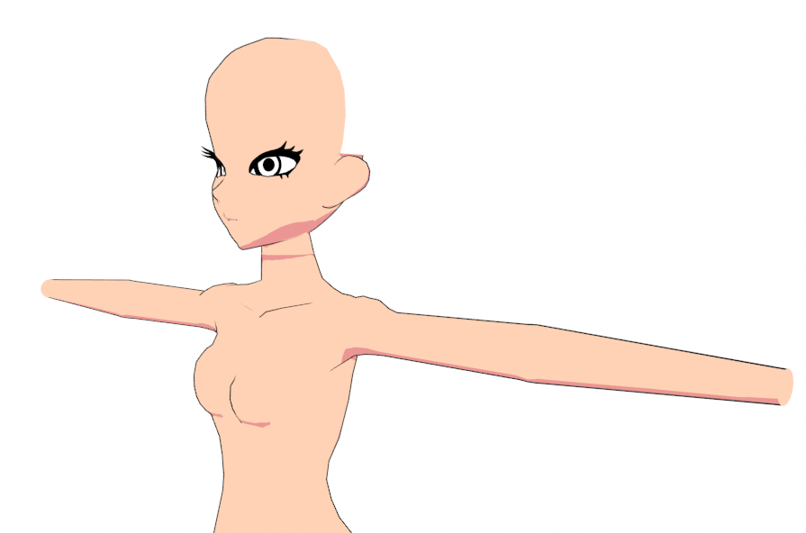

Origin: 3DCG Artworks
「動くもの」を作る楽しさの原点。挫折と挑戦から学んだアーティストのワークフロー

3Dの世界へ：アイデアを現実にするための試行錯誤
私が「動くものを作るエンジニア」を志すようになった原点は、大学2年の後期に受講した「CG制作演習」という授業でBlenderに出会ったことでした。
このページでは、その後のゲーム開発において「アーティストの気持ちとワークフローがわかるプログラマ」としての土台を築いた、初期のモデリングやアニメーション制作の変遷をまとめています。
原点：15秒のCM制作と「疑似ボーン」の構築 (2022.10 - 2023.02)
初作品としてエナジードリンクのCMムービーを制作しました。当初は「アニメ調キャラクターを動かす」構想でしたが、当時の技術と工数では不可能だと悟り、ロボットのキャラクターへ方針を転換しました。
余談ですが、最初のドアを開けるシーンが最も時間がかかりました。
💡 課題解決：知識不足をアイデアで補う
当時はアーマチュア（ボーン）によるスキニングの概念を知らなかったため、ロボットの腕や足の原点を関節位置に合わせ、体の中心から親子関係（ペアレント）を繋いでいくことで「疑似的なボーン構造」を自力で構築し、アニメーションを実現しました。
アイデアを現実的な手法に落とし込み、最終的に映像として出力されたときの感動が、その後のモノづくりへの情熱の原動力となっています。
原点
ここでの製作体験をきっかけとし、ゲーム制作団体への所属やCG研究の道に進むことを決めました。
独学と挫折から学んだ「制約と最適化」
リアルなバイクモデリングでの挫折と学び (2023.04 - 2023.06)
友人の誕生日プレゼントとして、CGで作成した画像を送ることを決め、友人の愛用するバイク（Honda CC110）のモデリングに挑戦しました。図面をリファレンスにしてモデリングを進め、ノードを用いたテクスチャ適用やバンプマッピングを初めて行いました。
⚠️ 失敗から得た「パフォーマンス」への意識
完成図（シーンのゴール）を明確に描かずに作り始めたため、細部の作り込みで迷走し頓挫してしまいました。
また、周辺の道路などのテクスチャ表現のため、サブディビジョンサーフェスとバンプマップを多用した結果、当時のノートPCでは処理の限界に達しました。
この苦い経験から、「少ない頂点数でいかに表現するか」「ローポリゴンとベイク処理を用いた最適化」の重要性を痛感し、後のゲーム開発におけるパフォーマンスチューニングの意識へと繋がっています。
⏳ 2023.07 - 2023.09
初めてのチーム制作への参加
この期間、自身初となるゲーム開発プロジェクト 夏チーム制作（AlienAssault） に3DCG担当として参加しました。ここで実践的なモデリングやベイクの基本フローを学び、チームへ向けた技術資料の作成なども経験しました。
テクスチャペイントの習得 (2023.09)
夏チーム終了後、テクスチャベイクを学んだ段階において、新たにテクスチャペイントという機能の存在を知り、それを試してみたくなり制作しました。
UV展開の歪みや、描く際に反映される向きなどを知り、UV展開における重要なポイントを学びました。また、この時に学んだテクスチャペイントの機能を、夏チームの際に作成した「ベイクについての資料」にページを追加する形で反映し、チームの技術資料をさらに充実させました。

ストーリーを伝えるアニメーション制作
Discordコミュニティでのハロウィン企画 (2023.10)
Discordサーバーにおける3DCGアーティストのコミュニティ企画に参加し、自作のキャラクター(Discordのテンプレートアイコン)モデルにボーンを通し、ポージングを行いました。
「こちらを認識し、キャンディを投げつけてくる」という3枚の画像でストーリーが伝わるような演出を意識しています。
パーティクルとブーリアンを用いたバースデームービー (2023.11)
友人の誕生日に向けて、ロボットのミサイルがモニュメントを粉砕するショートムービーを制作しました。前回の反省を活かし、今回は見せたい絵（ゴール）を明確にしてから制作に入りました。
- 技術的挑戦: Blender内での煙・炎のパーティクル表現の習得。
- モデリングの工夫: テキストデータをメッシュ化し、ブーリアンを用いて金属のモニュメントに文字を彫り込む処理を実装。
※ 制作に夢中になりすぎて誕生日（11月1日）から3週間ほど遅刻してしまいましたが、「今年から今日が君の誕生日だ」と言って送りつけ、無事喜んでもらえました。
実際のムービー(序盤に名前が出ているので省略しています)
質感とライティングの探求
ノードベースのシェーディング：「手の中の宇宙」 (2024.03.08)
「手のひらを太陽に...」の歌を受けて、「夜の暗闇の中で手を透かしたら、宇宙が見えるかもしれない」と子供の頃に考えたことをテーマに制作しました。手首から指先にかけて宇宙空間が広がるようなマテリアルを、ノードベースのシェーディングで構築しています。
またシェーディングを色の設定だけでなく、オブジェクトの何を起点に色を付けるかという設定が可能なことを知り、この作品には「カメラからオブジェクトを見た時」の設定がしてあるので、手を動かしても同じように水色で縁取られます。
▲ 左: 変更前 / 右: 最終版
思い描いた質感を出すためにCyclesエンジンでのレンダリングを実施し、寝る前に処理を走らせて翌朝確認するという、CG制作ならではの泥臭い試行錯誤を経験しました。
仕上がりに納得がいかず、さらに調整を重ねて完成させています。
マテリアルの分解と構成：「ポイズン徳利」 (2024.03.14)
ゲーム制作部門での会議において、「何か作りたいからモノを言ってくれ」とお題を募り、そのなかでメンバーからの「徳利」という提案を採用し制作しました。
一度作ったものに対しフィードバックを求め、ライティングやマテリアルカラーなどについての改善案をもらい、修正を行っています。
また、現実にはあり得ないイメージを生み出すことができるのがCGの強みなので、徳利という口を付けるものに対して(時代劇などで毒を盛られたりしているイメージもあり)あえて「毒々しい質感」をテーマに制作しました。


またシェーディングの理解を深めるため、完成形だけでなく、Base Color（ベースカラー）やNormal（法線マップ）、Metallic/Roughnessの要素を分解してレンダリングし、それぞれのパラメータが最終的な絵作りにどう影響するかを視覚的に検証しました。


▲ 左: カラー要素検証 / 右: ノーマルマップ検証
キャラクターモデリングとトポロジーへの挑戦
フルスクラッチでのキャラクター制作と「不気味の谷」 (2024.03.17)
動かすことを前提とした、所属していた団体のオリジナルキャラクターのフルスクラッチモデリングに挑戦しました。アニメーション時の破綻を防ぐため、関節部のトポロジー（ポリゴンの流れ）を意識しながら制作を進めました。

服や装飾などの全体的なフォルムには満足したものの、以下の理由からマネキンのようで怖くなる、いわゆる不気味の谷現象に直面しました。
- 顔の造形において高低差をつけすぎて、リアル寄りの骨格となってしまったため
- マテリアルをベタ塗りで済ませてしまったため
この経験から、トゥーン表現における「嘘（デフォルメ）」の重要性を身をもって学びました。
プロップ（小道具）制作とトゥーン表現：「トンプソン・コンテンダー」 (2024.03.14)
キャラクターに持たせる武器として制作。
フォトリアルは目指さず、トゥーンシェーディングに合うように木目などのテクスチャを粗めに調整しています。
また、弾痕から光が漏れるような演出を、板ポリゴンをくり抜いて強めのライトを当てるという「力技」で実装し、表現の幅を広げました。

2024年度以降の歩み
オリジナルデザインキャラクターの作成(2024.04～)
冬チームおよび、Unity1Weekの制作も終了し、4年生になり研究が始まりました。
院への進学は決まっていたものの、このまま3Dアーティストとしてやっていくことは無理だと考え、エンジニアを目指すことを決めたほか、研究のために時間をさけなくなり大きく時間を確保できなくなりました。
ひとつ前のキャラクターモデリングの反省を活かして、新たにモデルを作成し、ある程度ができたところでトゥーンシェーディングのテクスチャを作成していましたが、こちらは現在止まっています。

オリジナルゲームの制作(2026.01.22～)
ゲームソフトに関するエンジニアを目指す中で、
- ゲーム制作経験がないこと(自力でのプログラミング経験・完成作品がない)
- ゲームエンジンに触れた経験がないこと
に問題を感じ、ゲームを企画。
"DataBackTo"として現在も製作を行っている。そんな中で久々に3DCGでのオブジェクトに触れ、過去の経験が活きていることや、やってきたことの直線上にあることを感じている。

3DCG制作経験がエンジニアリングに活きていること
現在の強み
これら1年間の集中的なCG制作と試行錯誤を通じて、私は「頂点データの構造、UV展開、マテリアルノード、ボーンウェイト、ライティング」といった、3Dグラフィックスを構成する基礎要素を身体で理解しました。
現在、ソフトウェアエンジニアとしてゲームシステムの構築や、OpenGLを用いた低レイヤの物理シミュレーション研究（MPM）を行っていますが、「グラフィックスパイプラインの裏側で何が起きているか」をアーティストの視点とエンジニアの視点の両方からイメージできることが、パフォーマンスチューニングやアーキテクチャ設計において私の最大の武器となっています。